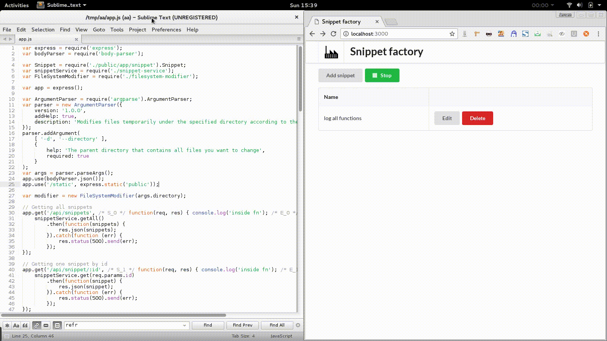

<div class="home">
  
  <h1 class="page-heading">Mini projects</h1>

  <h3>Snippet Factory</h3>
  <i>Applying temporarily modifications to code</i>
  <a href="snippet-factory.gif" target="_blank"></a>
  <!-- Place this tag where you want the button to render. -->
  <a aria-label="Watch jeroendeswaef/snippet-factory on GitHub" data-count-aria-label="# watchers on GitHub" data-count-api="/repos/jeroendeswaef/snippet-factory#subscribers_count" data-count-href="/jeroendeswaef/snippet-factory/watchers" data-style="mega" data-icon="octicon-eye" href="https://github.com/jeroendeswaef/snippet-factory" class="github-button">Watch</a>
</div>
